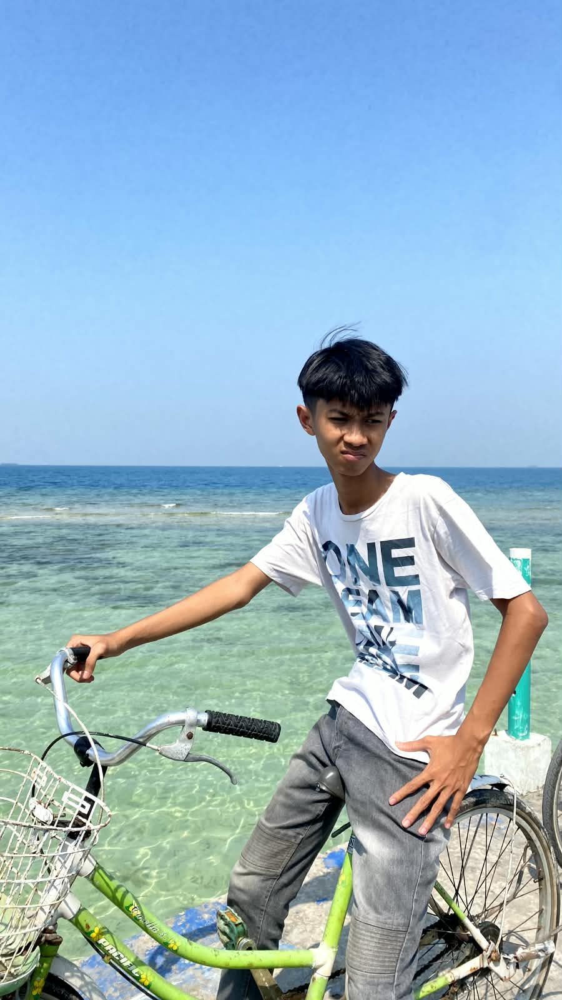

HTML
HTML
Menyusun struktur website dengan cara yang rapi, jelas, dan mudah dipahami agar konten terlihat kuat dan teratur.
Saya suka membuat website yang tidak hanya terlihat modern, tapi juga terasa nyaman, elegan, dan mudah dipahami oleh orang-orang yang membukanya.

Tentang Saya
Saya adalah individu yang tertarik pada teknologi, desain, dan cara membangun produk yang tidak hanya terlihat bagus, tetapi juga terasa intuitif dan mudah digunakan. Saya percaya bahwa komunikasi visual dan pengalaman pengguna adalah bagian penting dari sebuah produk digital.
Dengan pendekatan yang modern, saya membantu merek dan bisnis untuk menghadirkan identitas digital yang kuat melalui website yang elegan, responsif, dan berorientasi pada hasil.
Membangun pengalaman yang konsisten dengan visi brand.
Menempatkan kebutuhan pengguna sebagai prioritas utama.
Menyampaikan solusi yang rapi, cepat, dan mudah digunakan.
Keahlian
Menyusun struktur website dengan cara yang rapi, jelas, dan mudah dipahami agar konten terlihat kuat dan teratur.
Mendesain tampilan agar lebih modern, responsif, dan estetik dengan layout, warna, spacing, serta efek yang halus.
Cara Kerja
Website dibangun dengan susunan yang rapi agar lebih mudah dibaca, dikelola, dan dikembangkan.
Fokus pada tata letak, warna, dan ruang yang membuat tampilan terasa profesional dan enak dipandang.
Portofolio
Desain landing page premium untuk produk yang ingin tampil kuat di pasar digital.
Interface dashboard modern dengan fokus pada kejelasan data dan pengalaman pengguna.
Konsep toko online yang menggabungkan UX yang halus dengan visual yang menarik.
Mari Bekerja Sama